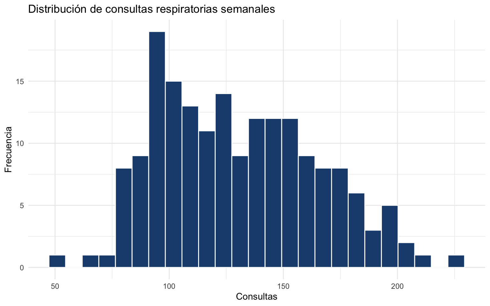
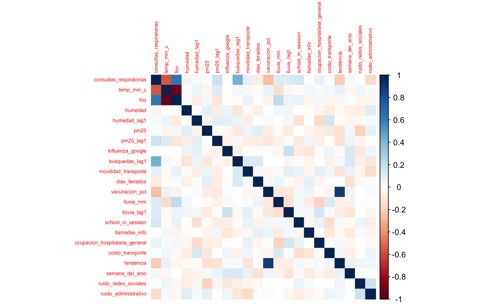
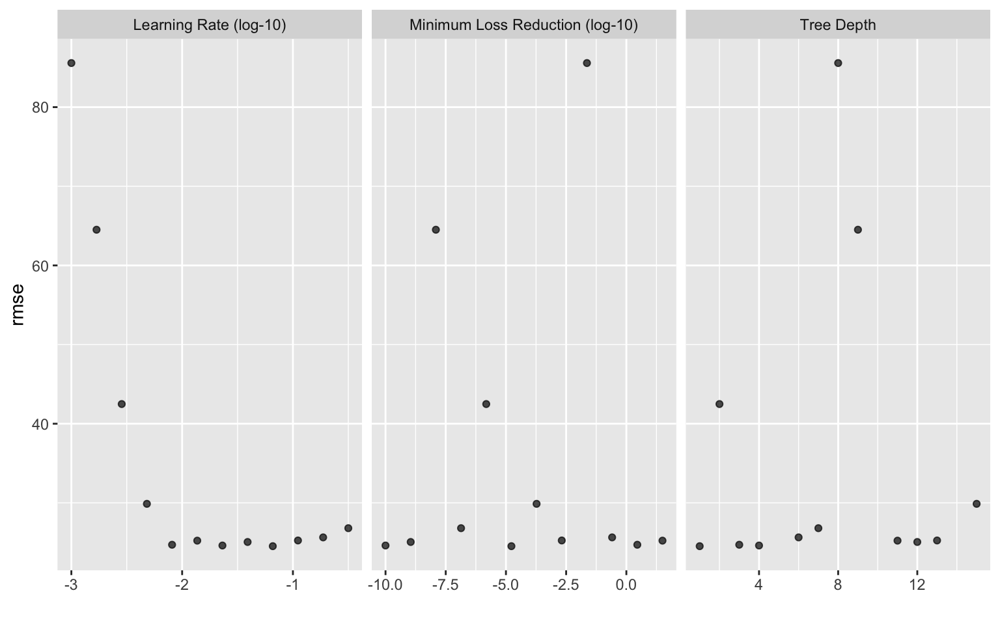
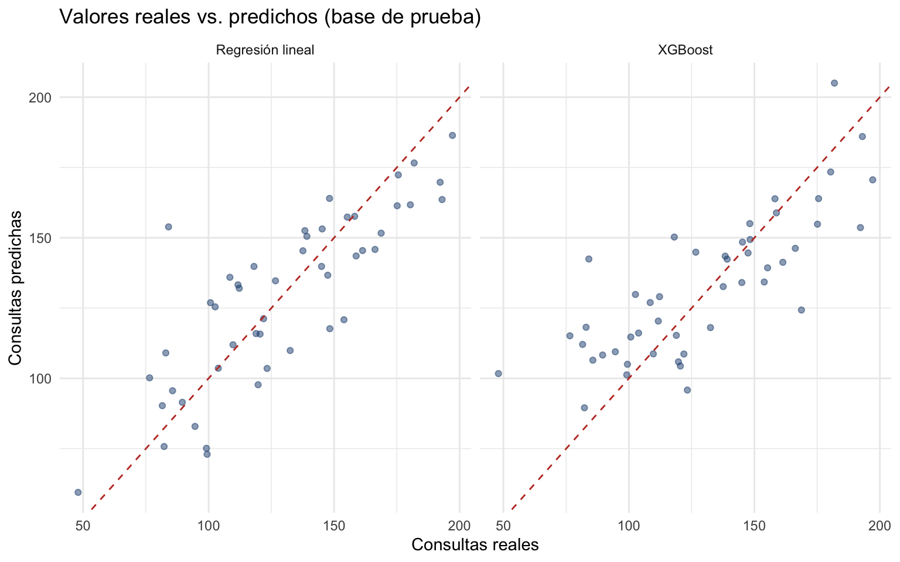
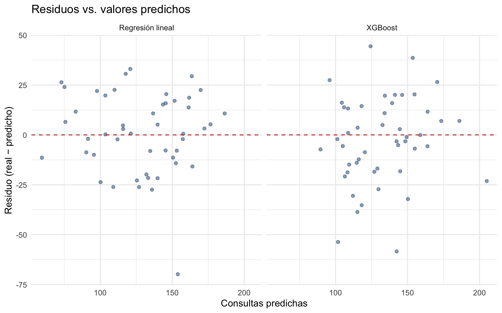
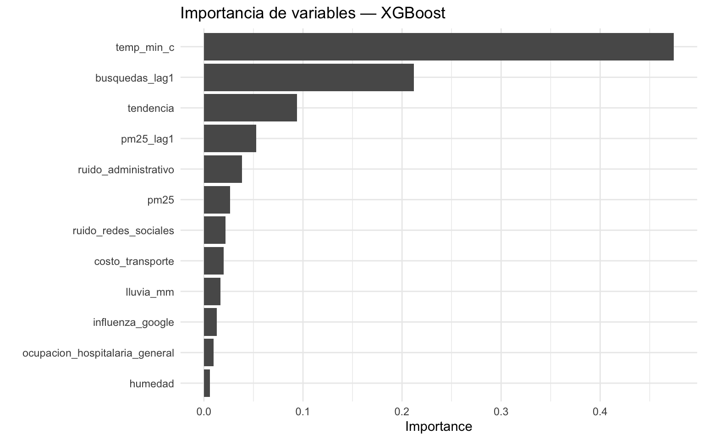

options(scipen = 999)Regresión: demanda de consultas respiratorias
EJERCICIO DE REGRESIÓN — Regresión lineal vs. XGBoost (no visto en clase)
Objetivo. Predecir el número semanal de consultas respiratorias (consultas_respiratorias) en una red de clínicas a partir de variables climáticas, epidemiológicas y de movilidad, muchas de ellas con rezagos (la humedad o la contaminación de semanas anteriores también explican la demanda actual). Compararemos dos modelos sobre el mismo flujo de trabajo: una regresión lineal (modelo base, interpretable) y XGBoost (no visto en clase) (un ensamble de árboles por boosting, que suele dar el mejor desempeño predictivo). Como hay muchos predictores rezagados y correlacionados entre sí, es un caso ideal para ver cómo se comporta un modelo lineal —sensible a la colinealidad— frente a uno de boosting, más robusto. Recorreremos el flujo completo de tidymodels: partición, receta de preprocesamiento, workflow(), validación cruzada, tuning de hiperparámetros y una evaluación honesta con last_fit(). Al final daremos un veredicto claro sobre cuál modelo conviene.
1. Cargar librerías
Agrupamos todas las librerías al inicio (buena práctica de reproducibilidad). tidyverse da el lenguaje de manipulación de datos; tidymodels es el marco de modelado; corrplot dibuja la matriz de correlación; xgboost es el motor que ajusta el modelo de boosting.
library(tidyverse)
library(tidymodels)
library(corrplot)
library(xgboost)tidymodels_prefer() resuelve los conflictos de nombres a favor de tidymodels (por ejemplo, que ciertas funciones provengan de los paquetes de modelado y no de otro paquete cargado).
tidymodels::tidymodels_prefer()2. Cargar los datos
Descarga los datos y reproduce el ejercicio en tu computadora
Los datos de este ejercicio están versionados en el repositorio del curso en GitHub: datos.csv. Puedes descargarlo y guardarlo junto a tu script, o leerlo directamente desde la web cambiando la ruta local por la URL raw:
clinicas <- read_csv("https://raw.githubusercontent.com/JuveCampos/TC2001B.601-Ciencia-de-datos-ene-jun-2026/main/05_EXAMENES/ejercicios_regresion_clasificacion/regresion/03_clinicas_respiratorias/datos.csv")Con esa liga puedes reproducir todo el ejercicio en tu propia computadora.
Leemos el CSV y removemos la columna semana (la fecha): la estacionalidad y la tendencia ya están capturadas por variables numéricas como semana_del_anio y tendencia, así que la fecha cruda no aporta poder predictivo adicional. El resto de las columnas es numérico.
# Quitamos la columna de fecha (semana): la estacionalidad y la tendencia ya
# están capturadas por semana_del_anio y tendencia. El resto es numérico.
clinicas <- read_csv("datos.csv") %>%
select(-semana)glimpse() nos da un vistazo rápido a tipos y valores de cada columna.
glimpse(clinicas)Rows: 180
Columns: 22
$ consultas_respiratorias <dbl> 161.34270, 82.94457, 161.61190, 163.805…
$ temp_min_c <dbl> 8.567508, 13.613703, 6.726494, 13.12361…
$ frio <dbl> 6.432492, 1.386297, 8.273506, 1.876388,…
$ humedad <dbl> 63.00014, 95.68591, 65.26283, 53.07624,…
$ humedad_lag1 <dbl> 63.00014, 63.00014, 95.68591, 65.26283,…
$ pm25 <dbl> 21.087456, 25.555383, 35.978161, 15.257…
$ pm25_lag1 <dbl> 21.087456, 21.087456, 25.555383, 35.978…
$ influenza_google <dbl> 7.709794, 3.486846, 16.983590, 11.70324…
$ busquedas_lag1 <dbl> 7.709794, 7.709794, 3.486846, 16.983590…
$ movilidad_transporte <dbl> 88.89189, 96.65730, 109.84641, 91.71950…
$ dias_feriados <dbl> 0, 0, 1, 0, 0, 0, 0, 0, 0, 0, 1, 0, 1, …
$ vacunacion_pct <dbl> 44.19051, 51.61272, 52.41646, 49.30812,…
$ lluvia_mm <dbl> 4.2499016, 1.1541405, 22.6701622, 0.373…
$ lluvia_lag1 <dbl> 4.2499016, 4.2499016, 1.1541405, 22.670…
$ school_in_session <dbl> 1, 1, 1, 1, 1, 0, 0, 1, 1, 1, 1, 0, 0, …
$ llamadas_info <dbl> 313.5877, 253.8695, 213.8419, 326.9990,…
$ ocupacion_hospitalaria_general <dbl> 73.73102, 76.18991, 59.35735, 90.05474,…
$ costo_transporte <dbl> 1.0822417, 1.0200234, 1.2354853, 1.1774…
$ tendencia <dbl> 1, 2, 3, 4, 5, 6, 7, 8, 9, 10, 11, 12, …
$ semana_del_anio <dbl> 1, 2, 3, 4, 5, 6, 7, 8, 9, 10, 11, 12, …
$ ruido_redes_sociales <dbl> 0.82099676, -2.51332718, -0.35642106, -…
$ ruido_administrativo <dbl> 0.764233067, 0.383727108, -0.109045274,…3. Explorar los datos
Antes de modelar conviene entender la variable objetivo y las relaciones entre predictores. Tres revisiones mínimas: la distribución de la objetivo (¿hay asimetría o valores extremos?), los datos faltantes (¿qué tendremos que imputar?) y la colinealidad (¿hay predictores que miden casi lo mismo?).
Primero, el histograma de las consultas semanales. Buscamos si la distribución es aproximadamente simétrica (cómodo para la regresión lineal) o muy sesgada.
clinicas %>%
ggplot(aes(x = consultas_respiratorias)) +
geom_histogram(bins = 25, fill = "#1e4c7d", color = "white") +
labs(title = "Distribución de consultas respiratorias semanales",
x = "Consultas", y = "Frecuencia") +
theme_minimal()
summary() resume cada variable y, de paso, nos dice cuántos NA tiene cada columna.
summary(clinicas) consultas_respiratorias temp_min_c frio humedad
Min. : 48.02 Min. :-4.177 Min. : 0.000 Min. :35.47
1st Qu.:102.00 1st Qu.: 7.767 1st Qu.: 0.000 1st Qu.:60.27
Median :125.68 Median :12.109 Median : 2.891 Median :65.62
Mean :130.32 Mean :11.888 Mean : 4.255 Mean :67.05
3rd Qu.:155.35 3rd Qu.:15.904 3rd Qu.: 7.233 3rd Qu.:74.41
Max. :222.78 Max. :32.902 Max. :19.177 Max. :98.00
humedad_lag1 pm25 pm25_lag1 influenza_google
Min. :35.47 Min. : 4.00 Min. : 4.00 Min. : 0.8557
1st Qu.:60.28 1st Qu.:17.85 1st Qu.:17.85 1st Qu.: 6.5406
Median :65.62 Median :22.56 Median :22.51 Median :10.9146
Mean :67.07 Mean :22.71 Mean :22.68 Mean :12.3130
3rd Qu.:74.41 3rd Qu.:27.60 3rd Qu.:27.60 3rd Qu.:15.8011
Max. :98.00 Max. :44.71 Max. :44.71 Max. :46.1661
busquedas_lag1 movilidad_transporte dias_feriados vacunacion_pct
Min. : 0.8557 Min. : 65.75 Min. :0.0000 Min. :40.94
1st Qu.: 6.5406 1st Qu.: 91.34 1st Qu.:0.0000 1st Qu.:55.66
Median :10.9146 Median :100.49 Median :0.0000 Median :64.97
Mean :12.3111 Mean :101.52 Mean :0.2167 Mean :63.80
3rd Qu.:15.8011 3rd Qu.:112.87 3rd Qu.:0.0000 3rd Qu.:71.00
Max. :46.1661 Max. :141.71 Max. :2.0000 Max. :87.40
lluvia_mm lluvia_lag1 school_in_session llamadas_info
Min. : 0.05689 Min. : 0.05689 Min. :0.0000 Min. :146.7
1st Qu.: 1.83626 1st Qu.: 1.83626 1st Qu.:1.0000 1st Qu.:218.1
Median : 3.53565 Median : 3.60426 Median :1.0000 Median :249.7
Mean : 4.20607 Mean : 4.21888 Mean :0.7667 Mean :250.0
3rd Qu.: 6.12921 3rd Qu.: 6.12921 3rd Qu.:1.0000 3rd Qu.:275.7
Max. :22.67016 Max. :22.67016 Max. :1.0000 Max. :352.5
ocupacion_hospitalaria_general costo_transporte tendencia
Min. :54.48 Min. :0.856 Min. : 1.00
1st Qu.:67.48 1st Qu.:1.140 1st Qu.: 45.75
Median :72.32 Median :1.204 Median : 90.50
Mean :72.22 Mean :1.208 Mean : 90.50
3rd Qu.:76.60 3rd Qu.:1.281 3rd Qu.:135.25
Max. :92.21 Max. :1.472 Max. :180.00
semana_del_anio ruido_redes_sociales ruido_administrativo
Min. : 0.00 Min. :-2.80005 Min. :-2.72855
1st Qu.:11.75 1st Qu.:-0.72209 1st Qu.:-0.54940
Median :23.00 Median :-0.07126 Median : 0.08662
Mean :24.50 Mean :-0.06530 Mean : 0.16115
3rd Qu.:37.25 3rd Qu.: 0.52897 3rd Qu.: 0.90820
Max. :52.00 Max. : 2.36873 Max. : 4.44492 Contamos los NA por columna de forma explícita: esto guía qué pasos de imputación necesitará la receta.
clinicas %>%
summarise(across(everything(), ~ sum(is.na(.)))) %>%
pivot_longer(everything(), names_to = "variable", values_to = "n_na") %>%
arrange(desc(n_na))| variable | n_na |
|---|---|
| consultas_respiratorias | 0 |
| temp_min_c | 0 |
| frio | 0 |
| humedad | 0 |
| humedad_lag1 | 0 |
| pm25 | 0 |
| pm25_lag1 | 0 |
| influenza_google | 0 |
| busquedas_lag1 | 0 |
| movilidad_transporte | 0 |
| dias_feriados | 0 |
| vacunacion_pct | 0 |
| lluvia_mm | 0 |
| lluvia_lag1 | 0 |
| school_in_session | 0 |
| llamadas_info | 0 |
| ocupacion_hospitalaria_general | 0 |
| costo_transporte | 0 |
| tendencia | 0 |
| semana_del_anio | 0 |
| ruido_redes_sociales | 0 |
| ruido_administrativo | 0 |
La matriz de correlación nos deja ver la colinealidad entre predictores numéricos. Con tantas variables rezagadas esperamos correlaciones muy fuertes (por ejemplo humedad con humedad_lag1, o pm25 con pm25_lag1): una variable y su rezago miden casi lo mismo. Esto es justo lo que hace sufrir a la regresión lineal —infla la varianza de los coeficientes—, por lo que más adelante filtraremos con step_corr().
# Con muchos predictores rezagados esperamos colinealidad fuerte
# (humedad vs humedad_lag1, pm25 vs pm25_lag1, etc.).
matriz_correlacion <- clinicas %>%
select(where(is.numeric)) %>%
drop_na() %>%
cor() %>%
round(2)
matriz_correlacion %>%
corrplot(method = "color", tl.cex = 0.5)
4. Partición entrenamiento / prueba
Dividimos los datos en entrenamiento (75%) y prueba (25%). La base de prueba se “guarda en una caja fuerte”: no la tocamos hasta el final, para obtener una estimación honesta del desempeño en datos nuevos. Estratificamos por la objetivo para que ambas particiones cubran rangos de consultas parecidos (en regresión, initial_split estratifica por cuantiles).
set.seed(2026)
clinicas_split <- initial_split(clinicas, prop = 0.75,
strata = consultas_respiratorias)
clinicas_entrenamiento <- clinicas_split %>% training()
clinicas_prueba <- clinicas_split %>% testing()c(entrenamiento = nrow(clinicas_entrenamiento),
prueba = nrow(clinicas_prueba))entrenamiento prueba
132 48 5. Receta de preprocesamiento (compartida por ambos modelos)
Usamos una sola receta para que los dos modelos sean comparables: ambos verán exactamente la misma representación de los datos. Aquí el step_corr() es especialmente relevante: con tantos rezagos, la regresión lineal se beneficia de eliminar la colinealidad; XGBoost es más robusto a ella, pero aplicar la misma receta a ambos garantiza una comparación limpia.
¿Qué es una receta y por qué importa el orden de los pasos?
Una receta (recipe) encadena pasos de preprocesamiento (step_*) que se aprenden solo con el entrenamiento y luego se aplican igual a la prueba (esto evita fuga de información). El orden importa: imputamos los NA primero, porque pasos como step_corr o step_normalize no toleran faltantes; quitamos predictores casi constantes; filtramos colinealidad; normalizamos; y dejamos step_zv al final como red de seguridad.
# Una sola receta comparable. Con tantos rezagos, step_corr es importante para
# la regresión lineal (la colinealidad infla la varianza de los coeficientes);
# XGBoost es más robusto a ella, pero usar la misma receta los hace comparables.
receta_clinicas <- recipe(consultas_respiratorias ~ .,
data = clinicas_entrenamiento) %>%
step_impute_median(all_numeric_predictors()) %>%
step_nzv(all_predictors()) %>%
step_corr(all_numeric_predictors(), threshold = 0.85) %>%
step_normalize(all_numeric_predictors()) %>%
step_zv(all_predictors())Conviene “hornear” la receta una vez para ver cómo quedan las variables tras el preprocesamiento (solo es inspección; el workflow lo hará por nosotros después). Fíjate en cuántos predictores sobreviven al filtro de colinealidad.
receta_clinicas %>%
prep(training = clinicas_entrenamiento) %>%
bake(new_data = NULL) %>%
glimpse()Rows: 132
Columns: 20
$ temp_min_c <dbl> 0.513202604, 0.020347246, 0.912694972, …
$ humedad <dbl> -0.81039922, -1.48085914, 0.92752175, -…
$ humedad_lag1 <dbl> 1.01633687, 0.20839419, -0.42765031, -0…
$ pm25 <dbl> -0.242721495, -2.223836770, 0.681192149…
$ pm25_lag1 <dbl> -0.461359662, -0.449610222, 0.063641848…
$ influenza_google <dbl> 1.30231687, -0.43268200, 2.02812082, -0…
$ busquedas_lag1 <dbl> -0.11844052, -0.29820302, -0.48437504, …
$ movilidad_transporte <dbl> -0.68386913, -0.22922638, 0.28020830, -…
$ dias_feriados <dbl> -0.493381, 2.011476, -0.493381, -0.4933…
$ lluvia_mm <dbl> 0.752986456, 0.064643539, 0.639630058, …
$ lluvia_lag1 <dbl> -0.5741280, -1.2543237, 1.5446551, -1.0…
$ school_in_session <dbl> -1.9199342, 0.5169054, 0.5169054, -1.91…
$ llamadas_info <dbl> -1.00043822, 1.62922262, 0.01728669, -0…
$ ocupacion_hospitalaria_general <dbl> 0.11590669, -1.59854030, 0.59389408, 0.…
$ costo_transporte <dbl> -0.38273913, 1.17785931, -0.45984125, 1…
$ tendencia <dbl> -1.5503994, -1.3777777, -1.2626965, -0.…
$ semana_del_anio <dbl> -0.86563362, -0.24799233, 0.16376852, 1…
$ ruido_redes_sociales <dbl> -0.96339439, -1.29589039, -1.44555490, …
$ ruido_administrativo <dbl> -0.947325309, -0.032618393, -1.28912063…
$ consultas_respiratorias <dbl> 92.69720, 84.13784, 97.33735, 88.57803,…6. Especificación de los modelos
Definimos los dos modelos con parsnip. El primero es la regresión lineal: no tiene hiperparámetros que ajustar.
modelo_lineal <- linear_reg() %>%
set_engine("lm") %>%
set_mode("regression")El segundo es XGBoost, donde sí ajustaremos varios hiperparámetros mediante validación cruzada.
¿Qué es XGBoost (boosting)? (no visto en clase)
XGBoost construye árboles en secuencia: cada árbol nuevo corrige los errores del conjunto anterior. El boosting reduce sobre todo el sesgo y suele dar el mejor desempeño predictivo, a costa de más hiperparámetros y mayor riesgo de sobreajuste. Aquí fijamos trees = 500 para acotar el cómputo y ajustamos tree_depth (profundidad de cada árbol), learn_rate (qué tan agresiva es cada corrección) y loss_reduction (la mejora mínima exigida para abrir una nueva división). tune() marca esos valores como “a determinar por validación cruzada”.
# XGBoost (boosting): árboles en secuencia, cada uno corrige los errores del
# anterior. Tuneamos profundidad, tasa de aprendizaje y la reducción mínima de
# pérdida. trees = 500 fijo para acotar el cómputo.
modelo_xgb <- boost_tree(
trees = 500,
tree_depth = tune(),
learn_rate = tune(),
loss_reduction = tune()
) %>%
set_engine("xgboost") %>%
set_mode("regression")Cada modelo se empaqueta con la misma receta en su propio workflow.
¿Qué es un workflow?
Un workflow empaqueta en un solo objeto la receta de preprocesamiento y el modelo. Al hacer fit() aplica internamente prep + bake + fit, y al predict() repite el mismo preprocesamiento sobre los datos nuevos sin que tengamos que recordarlo. Es la pieza estándar para validación cruzada y tuning.
workflow_lineal <- workflow() %>%
add_recipe(receta_clinicas) %>%
add_model(modelo_lineal)
workflow_xgb <- workflow() %>%
add_recipe(receta_clinicas) %>%
add_model(modelo_xgb)7. Validación cruzada y tuning de hiperparámetros
Para comparar los modelos y elegir los hiperparámetros de XGBoost sin tocar la prueba, usamos validación cruzada sobre el entrenamiento.
¿Qué es la validación cruzada (k-fold)?
Partimos el entrenamiento en v partes (folds) del mismo tamaño. En cada ronda entrenamos con v − 1 folds y evaluamos en el fold restante, rotando cuál se deja fuera; luego promediamos el desempeño. Así estimamos qué tan bien generaliza el modelo usando solo el entrenamiento, y reservamos la prueba para el final.
set.seed(2026)
folds_cv <- vfold_cv(clinicas_entrenamiento, v = 5,
strata = consultas_respiratorias)Definimos las métricas de regresión que vigilaremos.
RMSE, MAE y R²
- RMSE (raíz del error cuadrático medio): error típico en las unidades de la objetivo; penaliza más los errores grandes. Es la métrica de decisión.
- MAE (error absoluto medio): error típico, más robusto a valores extremos.
- R²: proporción de la variación de la objetivo que el modelo explica (1 = perfecto; 0 = no mejor que predecir la media).
metricas_regresion <- metric_set(rmse, rsq, mae)La regresión lineal no se tunea; estimamos su desempeño en CV con fit_resamples(). Esto la pone en igualdad de condiciones que XGBoost.
fit_resamples() vs. tune_grid()
Cuando un modelo no tiene hiperparámetros que ajustar (regresión lineal), fit_resamples() solo lo evalúa en cada fold. Cuando sí los tiene (XGBoost), tune_grid() prueba varias combinaciones de hiperparámetros en la validación cruzada y nos deja elegir la mejor.
set.seed(2026)
cv_lineal <- workflow_lineal %>%
fit_resamples(resamples = folds_cv, metrics = metricas_regresion)
collect_metrics(cv_lineal)| .metric | .estimator | mean | n | std_err | .config |
|---|---|---|---|---|---|
| mae | standard | 20.1820540 | 5 | 1.7822895 | pre0_mod0_post0 |
| rmse | standard | 24.4775859 | 5 | 2.0035527 | pre0_mod0_post0 |
| rsq | standard | 0.5140064 | 5 | 0.0576549 | pre0_mod0_post0 |
Para XGBoost dejamos que tune_grid() genere automáticamente 12 combinaciones de hiperparámetros (sus rangos por defecto son razonables) y las evalúe en validación cruzada.
# grid = 12 candidatos generados automáticamente para los tres hiperparámetros
# de XGBoost (sus rangos por defecto son conocidos).
set.seed(2026)
tuning_xgb <- workflow_xgb %>%
tune_grid(resamples = folds_cv,
grid = 12,
metrics = metricas_regresion)La siguiente gráfica (autoplot) muestra el RMSE de validación cruzada en función de cada hiperparámetro por separado (gráficas marginales). Sirve para ver hacia dónde empuja el desempeño cada perilla; buscamos la zona de menor RMSE.
# Vista de los hiperparámetros vs. RMSE (gráficas marginales).
autoplot(tuning_xgb, metric = "rmse")
Seleccionamos la combinación de hiperparámetros con menor RMSE en la validación cruzada.
mejor_xgb <- tuning_xgb %>% select_best(metric = "rmse")
mejor_xgb| tree_depth | learn_rate | loss_reduction | .config |
|---|---|---|---|
| 1 | 0.0657933 | 0.0000169 | pre0_mod01_post0 |
8. Implementar el workflow final de cada modelo
La regresión lineal ya está lista. A XGBoost le inyectamos los hiperparámetros ganadores con finalize_workflow().
workflow_xgb_final <- workflow_xgb %>%
finalize_workflow(mejor_xgb)9. Entrenar y evaluar con last_fit() sobre la prueba
¿Qué hace last_fit()?
last_fit() toma el split original, reentrena el modelo final sobre TODO el entrenamiento y lo evalúa una sola vez sobre la base de prueba reservada. Es el paso que da la estimación honesta del desempeño en datos que el modelo nunca vio.
ajuste_lineal <- workflow_lineal %>%
last_fit(split = clinicas_split, metrics = metricas_regresion)
ajuste_xgb <- workflow_xgb_final %>%
last_fit(split = clinicas_split, metrics = metricas_regresion)10. Pruebas del modelo: métricas y comparación
Reunimos las métricas de ambos modelos en la base de prueba en una sola tabla. Esta es la comparación que nos interesa: el desempeño en datos no vistos.
metricas_comparacion <- bind_rows(
collect_metrics(ajuste_lineal) %>% mutate(modelo = "Regresión lineal"),
collect_metrics(ajuste_xgb) %>% mutate(modelo = "XGBoost")
) %>%
select(modelo, .metric, .estimate) %>%
pivot_wider(names_from = .metric, values_from = .estimate) %>%
arrange(rmse)
metricas_comparacion| modelo | rmse | rsq | mae |
|---|---|---|---|
| Regresión lineal | 19.79057 | 0.6861647 | 15.7253 |
| XGBoost | 21.83615 | 0.6312111 | 17.1219 |
Para visualizar la calidad de cada modelo, graficamos los valores reales contra los predichos. La diagonal roja es la predicción perfecta: entre más pegados los puntos a la línea, mejor.
preds_lineal <- collect_predictions(ajuste_lineal) %>%
mutate(modelo = "Regresión lineal")
preds_xgb <- collect_predictions(ajuste_xgb) %>%
mutate(modelo = "XGBoost")
preds_ambos <- bind_rows(preds_lineal, preds_xgb)preds_ambos %>%
ggplot(aes(x = consultas_respiratorias, y = .pred)) +
geom_point(alpha = 0.5, color = "#1e4c7d") +
geom_abline(color = "#c0392b", linetype = 2) +
facet_wrap(~ modelo) +
labs(title = "Valores reales vs. predichos (base de prueba)",
x = "Consultas reales", y = "Consultas predichas") +
theme_minimal()
El gráfico de residuos (real − predicho) contra el valor predicho ayuda a detectar sesgos: buscamos una nube sin patrón alrededor del cero. Un embudo o una curva indicarían que el modelo se equivoca sistemáticamente en algún rango.
preds_ambos %>%
mutate(residuo = consultas_respiratorias - .pred) %>%
ggplot(aes(x = .pred, y = residuo)) +
geom_point(alpha = 0.5, color = "#1e4c7d") +
geom_hline(yintercept = 0, color = "#c0392b", linetype = 2) +
facet_wrap(~ modelo) +
labs(title = "Residuos vs. valores predichos",
x = "Consultas predichas", y = "Residuo (real − predicho)") +
theme_minimal()
Una ventaja de XGBoost es que podemos ordenar los predictores por su importancia (no visto en clase): cuánto contribuye cada variable a reducir el error a lo largo de todos los árboles del ensamble. La gráfica vip muestra las 12 variables más influyentes, lo que nos dice qué señales (clima, epidemiología, movilidad, y sus rezagos) dominan la predicción de la demanda de consultas.
# Importancia de variables de XGBoost.
ajuste_xgb %>%
extract_fit_parsnip() %>%
vip::vip(num_features = 12) +
labs(title = "Importancia de variables — XGBoost") +
theme_minimal()
Veredicto: ¿cuál es el mejor modelo?
# Ordenamos por RMSE (menor es mejor) y medimos la diferencia relativa entre
# el mejor y el segundo, para juzgar si la ventaja es relevante o marginal.
tabla_final <- metricas_comparacion %>%
arrange(rmse) %>%
mutate(rmse = round(rmse, 2),
rsq = round(rsq, 3),
mae = round(mae, 2))
ganador <- tabla_final %>% slice(1)
perdedor <- tabla_final %>% slice(2)
dif_rel_pct <- round(100 * (perdedor$rmse - ganador$rmse) / perdedor$rmse, 1)# Tabla comparativa final (ordenada del mejor al peor por RMSE)
tabla_final| modelo | rmse | rsq | mae |
|---|---|---|---|
| Regresión lineal | 19.79 | 0.686 | 15.73 |
| XGBoost | 21.84 | 0.631 | 17.12 |
Modelo recomendado: Regresión lineal. Obtiene el menor RMSE en la base de prueba (19.79 consultas) con un R² de 0.686, frente a 21.84 consultas del modelo xgboost. Su RMSE es 9.4% menor.
La ventaja de Regresión lineal es relevante (9.4% en RMSE), por lo que es la elección clara para este problema.
Recuerda el balance: con muchos predictores rezagados y correlacionados, la regresión lineal depende de un buen filtro de colinealidad (step_corr) y aun así puede quedar limitada si la relación es no lineal; es, eso sí, la más fácil de interpretar (un coeficiente por variable). XGBoost suele superarla en desempeño porque construye árboles que corrigen secuencialmente los errores, y su gráfica de importancia ayuda a comunicar qué factores impulsan la demanda; a cambio, tiene más hiperparámetros que ajustar y mayor riesgo de sobreajuste, controlado aquí con el tuning de learn_rate, tree_depth y loss_reduction.